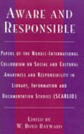

|  |
| About IR |
| Editors |
| Author instructions |
| Copyright |
| Author index |
| Subject index |
| Search |
| Reviews |
| Register |
| Home |
Rayward, W. Boyd (Ed.), Aware and responsible: Papers of the Nordic-International Colloquium on Social and Cultural Awareness and Responsibility in Library, Information and Documentation Studies (SCARLID). Oxford: Scarecrow Press, Inc., 2004. vii, 180 p. ISBN 0-8108-4954-2. $32.00.
This volume consists of nine papers delivered at the Nordic-International Colloquium on Social and Cultural Awareness and Responsibility in Library, Information and Documentation Studies (SCARLID) as the sub-title states. A total of twelve papers was presented at the colloquium in Oulu (13-14 December, 2001), but three of them were published elsewhere.
The participants of the colloquium and the editors of the book talk about social and cultural responsibility in library, information, and documentation studies as a uniting concept that was discussed in this event. They approach this awareness and responsibility with care, impressive intellectual depth and from several perspectives. In many cases, the authors employ the contraposition of paradigms, approaches, or separate disciplines in the library, information and documentation area to enhance and illustrate their ideas. They also turn to great thinkers and authorities of the past for support of their arguments and as a source of fresh and unexpected ideas. Indeed, the new is the well-forgotten old.
The very first paper in the collection by Åström sets the ambitious task of analysing library and information science in the light of the theories of social and intellectual development of scientific fields from the point of view of its dimensions, organisational features, relations with other scientific fields, and audiences. Mainly his analysis is based on Whitley's model. The discussion of these aspects depicts ibrary and information science as a weak (or an emerging) scientific field. It also can support to some extent the views of those researchers who treat library and information science not as a science but as a field of studies consisting of a variety of disciplines of a very different nature and embedded within another wider field of communication studies (I believe that this perspective was not strongly represented in the colloquium).
Several authors discussed information management. Black's chapter on information management history will not be a surprise to the readers who follow his work, but as always I enjoyed the soundness of the arguments, the profound knowledge, and the wideness of the perspective. Vesa Suominen set out to explore the essential differences between information management and librarianship. However, I was not convinced by his argument that the goal of information management is related only to the success of organization and librarianship as a metadocumentation has a wider responsibility based on authority of a document. To my mind the author is confusing IM and librarianship as fields of practice with IM and librarianship as scientific disciplines. As fields of practice both have to help the institutions within which they exist (be it an organization or a local community) 'to achieve success' (whether to increase profit or to preserve cultural heritage), in research various perspectives can be used in both disciplines equally, including the perspective of information as a resource or a document as authority. It also seems that the author saw the inconsistencies as well, as he indicated the possibility of an alternative approach to both information management and library and information science, still trying to keep on track of his leading idea. Other authors also tend to counter position different trends in the library and information science study area and argue for one of them, sometimes even forgetting that scientific argument should be not only passionate but also objective and precise.
I enjoyed reading the book but at some point started feeling uneasy about it as a whole. It seemed that despite all the energy and passion expressed by the authors, the whole book emanates a strong sense of intellectual insularity. As documentation, institutional, and bibliographic paradigms in librarianship seem to me not only strong but also dominating, I had difficulty in relating to their passionate defence against, for example, information retrieval (this in my eyes occupies a marginal space in library and information science, if any at all). Actually, my sense of irrelevance was caused mainly by the fact that the authors and participants of the Colloquium represented exclusively the Western (Anglo-Saxon and Scandinavian) research and sometimes it seemed that they do not even suspect the existence of any other that might have been shaped differently by historical conditions and tradition. At least in one of them (namely, Russian) meso-institutional library research (lamented in this book as underestimated and neglected) dominates, but it is not based on the social constructivist perspective at all (see, J. Hansson's article).
To some extent I also attributed my uneasiness to the sex of the participants in the Colloquium. It seems that from our female dominated area of practice and research just one woman (Sanna Talja) was considered to be aware and responsible enough to take part in the discussion. Unfortunately she was among those who have chosen to publish elsewhere.
Dr. Elena Macevičiūtė
Vilnius university, Lithuania and
Swedish School of Librarianship and Information Studies
Borås, Sweden
December, 2004
December, 2004
How to cite this review
Macevičiūtė, E. (2005). Review of: Rayward, W. Boyd (Ed.), Aware and responsible: Papers of the Nordic-International Colloquium on Social and Cultural Awareness and Responsibility in Library, Information and Documentation Studies (SCARLID). Oxford: Scarecrow Press, Inc., 2004. Information Research, 10(2), review no. R161 [Available at: http://informationr.net/ir/reviews/revs161.html]